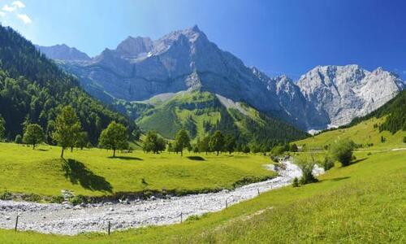

Ferien gehören wie die Schulferien in den Bereich des Schulwesens. Auch der Erholungsurlaub ist
nur eine bestimmte Art von Urlaub. Der Ausdruck „Urlaub machen“ bedeutet in der Regel, eine
überwiegend erholungs- oder erlebnisorientierte Reise – eine Urlaubsreise – anzutreten.
Urlaub ist ein Teil der Freizeit, so dass der Urlaub der freien Gestaltung wie auch die Freizeit
unterliegt. Wird mit dem Urlaub eine Reise verbunden, so wird diese als Urlaubsreise bezeichnet.
Urlaub wird oft gleichgesetzt mit Ferien, wobei Ferien nicht im Arbeitsrecht vorkommen.

Bergurlaub
Vermutlich ist dies hier nicht gerade der Text, den Sie hier erwartet hätten. Vielleicht lesen
Sie diesen nicht mal, da die Überschrift ja irgendwie zu wenig reisserisch war. Dabei würde sich
ein genauerer Blick, ein genaueres Hinsehen, Lesen und Nachdenken lohnen. Denn wer weiss, was
denn da überbrückt werden soll, was sich unter der Brücke verbirgt. Vielleicht ein reisserischer
Fluss, ein gigantischer tiefer Graben einer Schlucht.
Almurlaub
Naja, jedenfalls muss es ja irgendeinen Grund geben, warum gerade hier jemand eine
Überbrückung hingestellt hat. Oder steht diese Überbrückung einfach in der offenen
Landschaft rum, ohne dass es einen ersichtlichen Grund gibt, diese auch zu nutzen,
vielleicht verbindet sie so zwei Seiten, welche auch aussenrum ohne Umweg und Hindernis ohne
sie erreichbar gewesen wäre. Aber vermutlich eher nicht. Denn wer will schon etwas Bauen,
was keinen Nutzen hat.
Almurlaub
Naja, jedenfalls muss es ja irgendeinen Grund geben, warum gerade hier jemand eine
Überbrückung hingestellt hat. Oder steht diese Überbrückung einfach in der offenen
Landschaft rum, ohne dass es einen ersichtlichen Grund gibt, diese auch zu nutzen,
vielleicht verbindet sie so zwei Seiten, welche auch aussenrum ohne Umweg und Hindernis ohne
sie erreichbar gewesen wäre. Aber vermutlich eher nicht. Denn wer will schon etwas Bauen,
was keinen Nutzen hat.